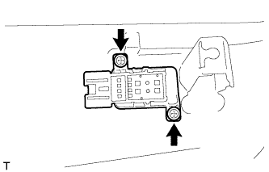

ПЕРЕКЛЮЧАТЕЛЬ ОПОРЫ ПОЯСНИЦЫ (для моделей с ручным приводом сидений) > СНЯТИЕ |
| 1. СНИМИТЕ ПЕРЕДНЕЕ СИДЕНЬЕ В СБОРЕ |
Снимите переднее сиденье в сборе (Нажмите здесь).
| 2. СНИМИТЕ РУЧКУ ОТПУСКАНИЯ РЕГУЛЯТОРА НАКЛОНА ЛЕВОГО СИДЕНЬЯ |
 |
Поднимите ручку отпускания регулятора угла наклона, чтобы открыть захват. С помощью отвертки освободите захват и снимите ручку.
| *1 | Защитная клейкая лента |
| 3. СНИМИТЕ РУЧКУ РЕГУЛИРОВКИ ПОЛОЖЕНИЯ ПО ВЕРТИКАЛИ ЛЕВОГО СИДЕНЬЯ |
 |
Выверните винт и снимите ручку.
| 4. СНИМИТЕ ЗАЩИТНЫЙ ЩИТОК ПОДУШКИ ЛЕВОГО ПЕРЕДНЕГО СИДЕНЬЯ |
 |
Выверните винт.
С помощью съемника молдингов освободите 4 захвата и фиксатор и снимите защитный щиток подушки.
 |
Со стороны водителя:
Открепите 5 зажимов жгута проводов и отсоедините 2 разъема.
| 5. СНИМИТЕ ПЕРЕКЛЮЧАТЕЛЬ ЭЛЕКТРОПРИВОДА ОПОРЫ ПОЯСНИЦЫ В СБОРЕ |
|  |
Выверните 2 винта и снимите переключатель.